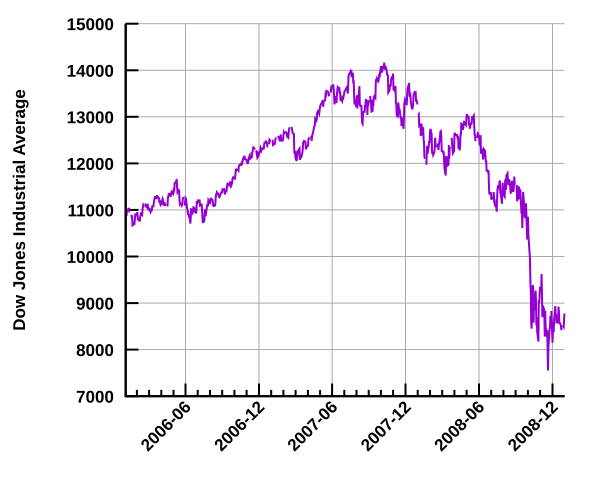
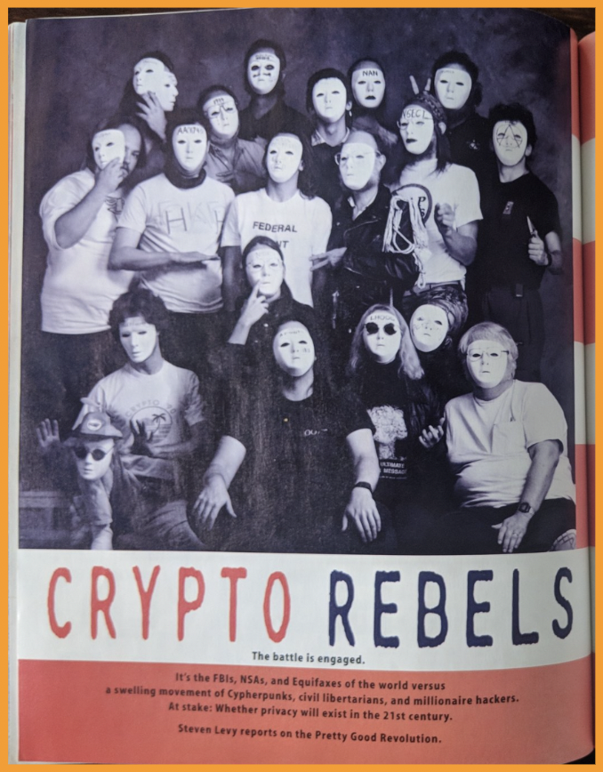
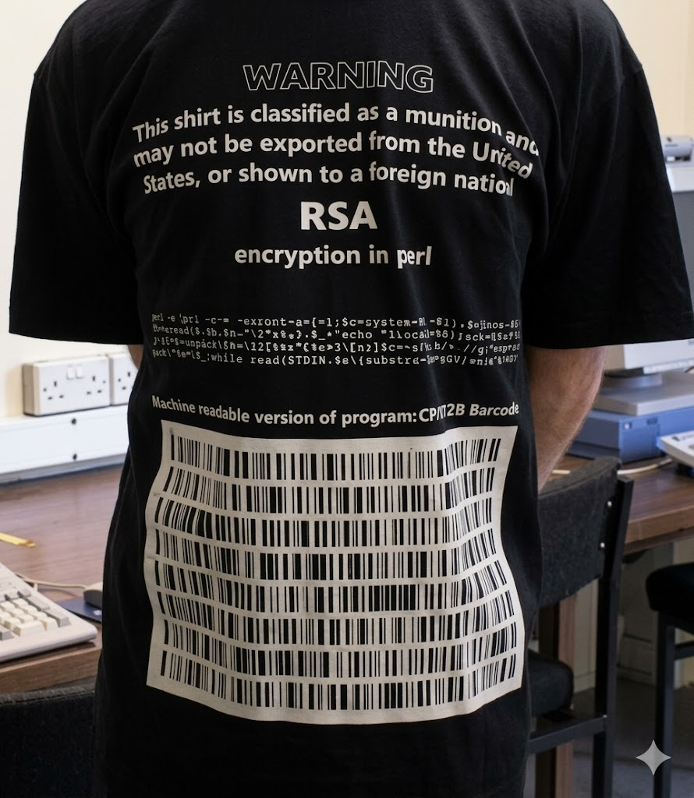
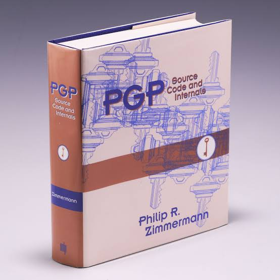
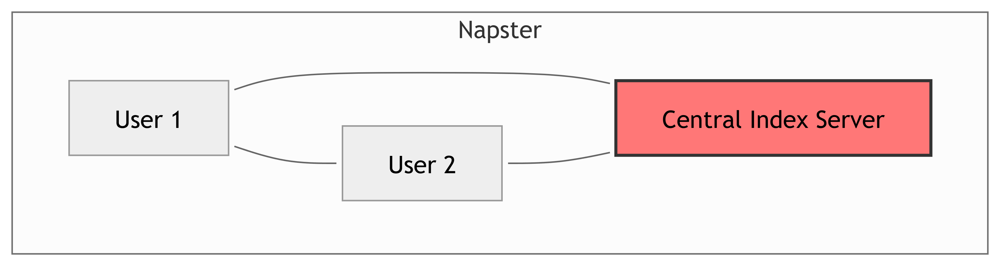
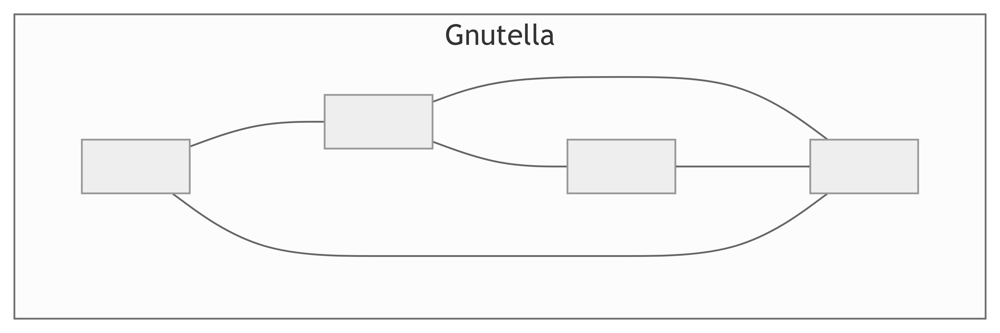

Section I: Introduction · Lesson 03-IN
The Cypherpunk Ethos and Decentralized Trust
Framing
Lesson Goal: Understand the ‘why’ behind blockchain.
We’ll explore the history, ideas, and frustrations that led to the creation of Bitcoin.
This isn’t just about technology; it’s about trust, privacy, and control in a digital world.
Today’s Agenda
- Digital Trust: What did it mean before blockchain?
- The Cypherpunk Ethos: A movement for privacy through cryptography.
- The Crypto Wars: The fight to make strong encryption public.
- Early Failures: Lessons from the first attempts at digital money.
- Peer-to-Peer (P2P): How systems like Napster changed the game.
- The Spark: How these ideas converged to create Bitcoin.
Exercise
Mini-poll: Would you email your SSN unencrypted? Why not?
If two strangers transact online with no bank, what must be true to make it safe?
Digital Trust: The Centralized Model
How It Works:
- Intermediaries: Banks, credit card companies, and governments act as trusted third parties.
- Verification: They verify identities, keep records, and enforce rules.
- Reversibility: They can reverse fraudulent transactions.
The Trade-Offs:
- Cost: Intermediaries charge fees.
- Censorship: They can block payments or freeze accounts.
- Security: They are single points of failure and massive targets for hackers.
A Crisis of Trust: 2008

On October 31, 2008, in the depths of the financial crisis, the Bitcoin whitepaper was published.
It proposed a financial system that didn’t require trust in banks.
- Systemic trust shock: failure cascades, opaque leverage, and liquidity freezes undermined confidence.
- Policy response: extraordinary interventions and subsequent regulations.
- Context for Bitcoin (Oct 2008 whitepaper): a design that minimizes dependence on trusted third parties.
The Cypherpunk Movement
“Privacy is necessary for an open society in the electronic age… We cannot expect governments, corporations, or other large, faceless organizations to grant us privacy… We must defend our own privacy if we expect to have any. We must come together and create the systems which allow anonymous transactions to take place.”
— Eric Hughes, A Cypherpunk’s Manifesto (1993)
- Activists, computer scientists, and cryptographers in the early 1990s.
- Believed strong cryptography was a tool for social and political change.
- Core idea: Don’t ask for privacy. Build it. Use code to create a world where privacy is the default.

Privacy as a Prerequisite for Open Society
- Selective disclosure: anonymity/pseudonymity for transactions when identity isn’t necessary.
- Cryptography Export Controls: code publication tied to First Amendment debates. (See: PGP, next slides)
- Goal: empower individuals to reveal identity only when desired.
The Crypto Wars: U.S. Gov Position (1990s)
- Strong cryptography was classified as a munition.
- Exporting it was illegal, like selling a missile.
- The goal was to ensure intelligence agencies could break any code.

The Crypto Wars: Cypherpunk Response
- PGP (Pretty Good Privacy): Phil Zimmermann released his strong encryption software for free in 1991, leading to a multi-year federal investigation.
- Code as Speech: To bypass export laws, the PGP source code was printed in a book. It was legal to export a book, which contained protected First Amendment speech.

PGP’s source code, printed as a book to legally export it.
Early Attempts at Digital Money
DigiCash (1989-1998)
- Created by famed cryptographer David Chaum.
- Used blind signatures to provide truly anonymous, untraceable payments.
- The Flaw: It was a centralized company. It needed to partner with a bank to issue money. When the company went bankrupt, the system died.
e-gold (1996-2009)
- A centralized service that allowed users to transfer ownership of grams of gold.
- Became a hub for illicit activity due to its lax identity verification.
- The Flaw: As a central entity, it was shut down by law enforcement for operating as an unlicensed money transmitter.
Lesson: strong privacy tech ≠ decentralized control; bank trust still required.
P2P Normalizes Decentralization
Napster (1999)
- P2P file sharing, but used a central server to index files.
- This central server was its legal Achilles’ heel, leading to its shutdown.

Gnutella & BitTorrent (2000s)
- Truly decentralized. No central server to shut down.
- Nodes connect directly to each other to find and share files.
- BitTorrent introduced incentives to encourage sharing.

The Lesson: These systems proved that large-scale, resilient, decentralized coordination was possible without a central authority.
The Synthesis: Bitcoin
Bitcoin combined these decades of ideas into one elegant solution.
The key breakthrough: Using Proof-of-Work (mining) to allow a decentralized P2P network to agree on a single, shared history of transactions without a trusted leader.
Promises vs. Reality
| Promise | What Actually Happened |
|---|---|
| Eliminate Intermediaries | New intermediaries (exchanges, wallet providers) emerged. Most users interact with Bitcoin through a centralized company. |
| Censorship Resistance | The core protocol remains very censorship-resistant. It’s difficult to stop a transaction from being broadcast and mined. |
| Low-Cost Payments | Transaction fees can become very high during periods of network congestion, making small payments impractical. |
| Privacy | Bitcoin is pseudonymous, not anonymous. All transactions are public, and advanced forensics can often link addresses to real-world identities. |
| ‘Bank the Unbanked’ | Volatility, high fees, and technical complexity have been major barriers to adoption as a daily currency in developing nations. |
Why This History Matters
Understanding the ‘why’ helps you analyze the ‘how’ and the ‘what now’.
Threat Modeling: Decentralized systems have different weaknesses. Instead of hacking a server, an attacker might try to control the consensus mechanism (a 51% attack) or exploit the economic incentives.
Policy Literacy: Today’s debates about crypto regulation, privacy coins, and central bank digital currencies are echoes of the Crypto Wars. The history helps you understand the stakes.
Critical Evaluation: Knowing the original goals of the technology allows you to cut through the hype and assess whether a new blockchain project is a genuine innovation or just a solution in search of a problem.
Summary
Blockchain was not created in a vacuum; it was a response to decades of debate about trust, privacy, and centralization.
The Cypherpunk movement provided the ideological drive, advocating for privacy through strong cryptography.
The failure of centralized digital currencies like DigiCash and e-gold proved that a resilient system needed to be decentralized.
P2P networks like BitTorrent demonstrated that large-scale decentralized coordination was possible.
Bitcoin’s key innovation was combining these ideas with Proof-of-Work to solve the double-spending problem without a central authority.